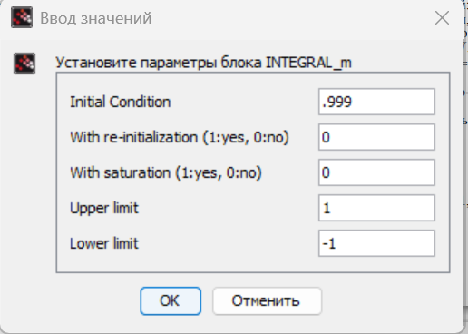
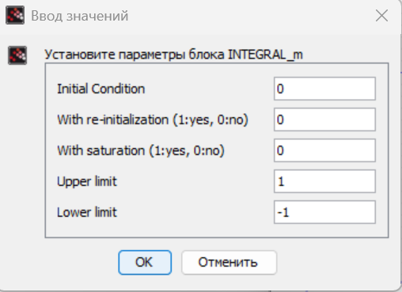
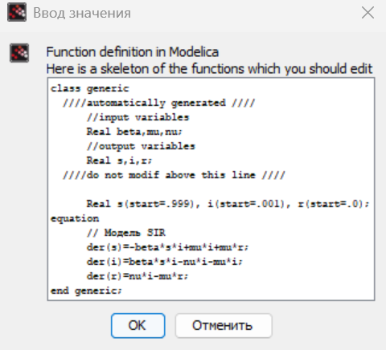

- Извекова Мария Петровна
- студентка 3-го курса
- Российский университет дружбы народов
- 1132226460@pfur.ru

Построить модель SIR в xcos и OpenModelica.
$$ \begin{cases} \dot{s}(t) = -\beta s(t) i(t), \\ \dot{i}(t) = \beta s(t) i(t) - \nu i(t), \\ \dot{r}(t) = \nu i(t) \end{cases} $$
где β - скорость распространения, ν - скорость выздоравления
Зафиксируем начальные данные: β = 1 ν = .3 s(0)=0.999, r(0)=0, i(0)=0.001 В меню Моделирование, Установить контекст зададим значения переменных β и ν(рис. [-@fig:001]).







```modelica parameter Real I_0 = 0.001; parameter Real R_0 = 0; parameter Real S_0 = 0.999; parameter Real beta = 1; parameter Real nu = 0.3; Real s(start=S_0); Real i(start=I_0); Real r(start=R_0); equation der(s) = -beta * s * i; der(i) = beta * s * i - nu * i; der(r) = nu * i; ``` $$ \begin{cases} \dot{s}(t) = -\beta s(t) i(t) + \mu \left(N - s(t)\right), \\ \dot{i}(t) = \beta s(t) i(t) - \nu i(t) - \mu i(t), \\ \dot{r}(t) = \nu i(t) - \mu r(t) \end{cases} $$



```modelica parameter Real I_0 = 0.001; parameter Real R_0 = 0; parameter Real S_0 = 0.999; parameter Real N = 1; parameter Real beta = 1; parameter Real nu = 0.3; parameter Real mu = 0.5; Real s(start=S_0); Real i(start=I_0); Real r(start=R_0); equation der(s) = -beta * s * i + mu * i + mu * r; der(i) = beta * s * i - nu * i - mu * i; der(r) = nu * i - mu * r; ``` 
В процессе выполнения данной лабораторной работы была построена модель SIR в xcos и OpenModelica